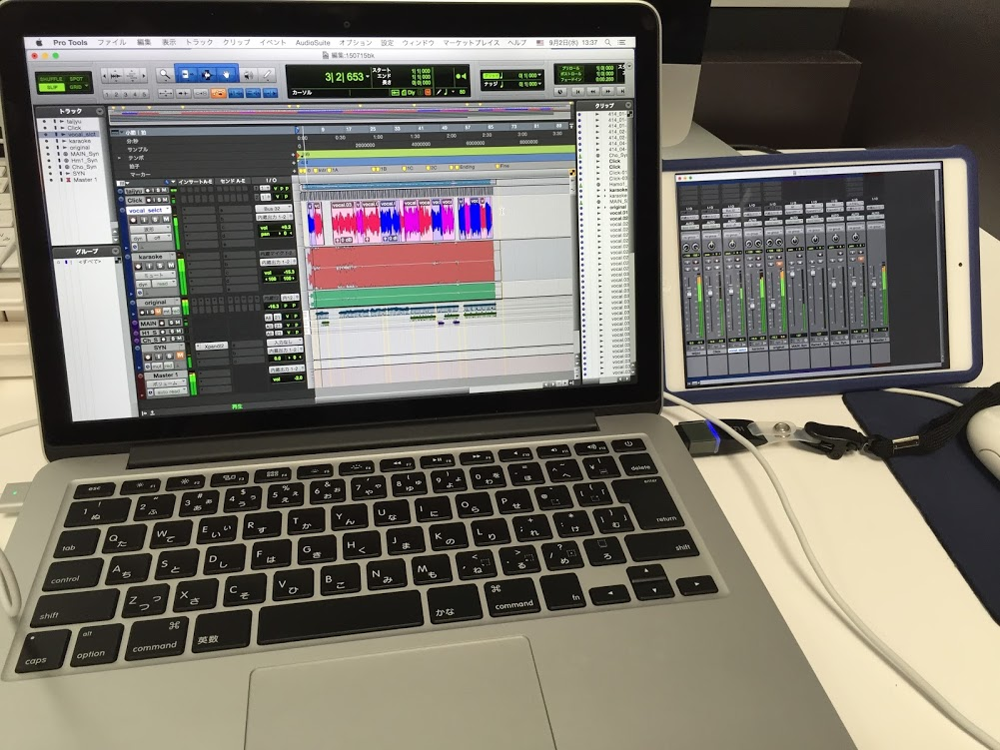
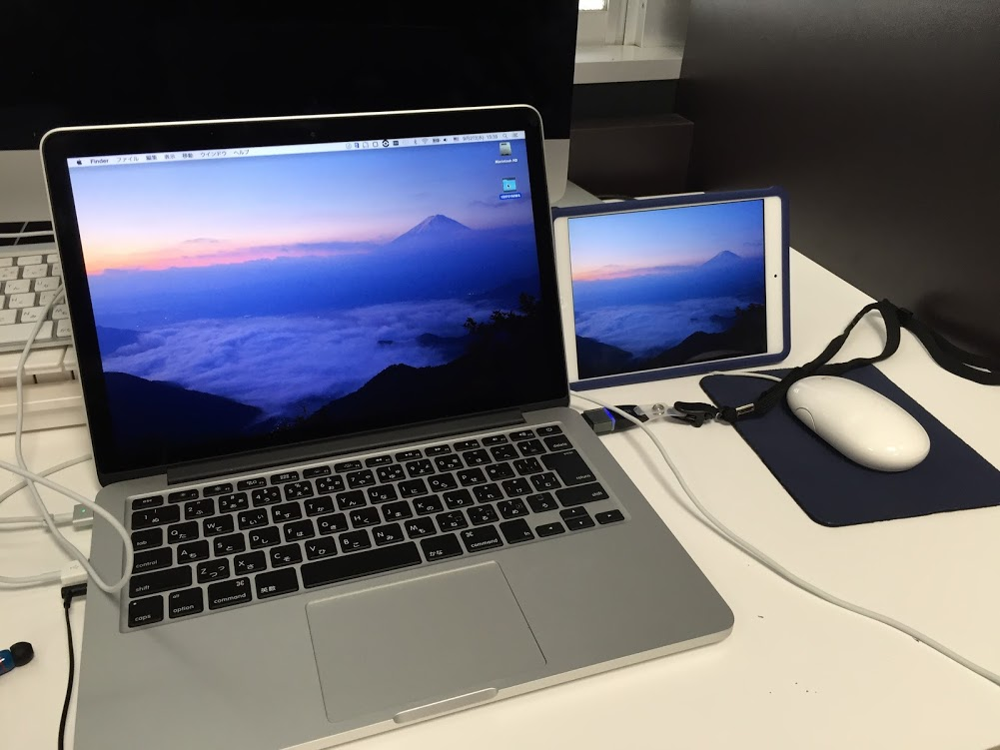

モバイルディスプレイとしてのiPad
普段からマルチディスプレイでMixウィンドウとEditウィンドウを使っている身としては、出先での編集作業が億劫なのである。
というのも、MacBookPro(JIS Keyboard)にはウィンドウを切り替える、＝キーが無いからだ。（?＋＝でMix/Editウィンドウの切り替え）
そこで今回は、iOS対応の「Duet」を試しに使ってみた。
「Duet」をPCとiPadにインストール・起動し、Lightningケーブルで双方を繋ぐ。
設定を完了させてiPadの画面をタッチすると、カーソルが現れる。 ProToolsのMix画面にてフェーダーを指で上げ下げすることで、自然なオートメーションを描くことができるのでは？と考えた。 しかしタッチパネルとしてはレイテンシが気になり、まだまだ運用には向かない。（体感上、１Sec未満で反応している） 因みに、映像の遅延は気にならない程度。動画再生にも耐え得る。結局、ProToolsControlはwifi環境がないとダメだし、まだまだCommand8やArtist Mixに頼らざるを得ないのか～～。
 